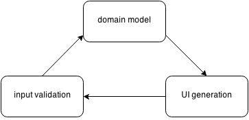

tcomb-form v0.4
"Simplicity is the ultimate sophistication"
(Leonardo da Vinci)
The tcomb library provides a concise but expressive way to define domain models in JavaScript.
The tcomb-validation library builds on tcomb, providing validation functions for tcomb domain models.
This library builds on those two and realizes an old dream of mine.
With tcomb-form you simply call:
<Form type={Model} />
to generate a form based on that domain model. What does this get you?
11 KB minified and gzipped, 8 KB without the Bootstrap theme.
tcomb-form lets you override automatic features or add additional information to forms.
Customizable look and feel: use your preferred css framework like Bootstrap, Foundation, Ionic, Pure.
Bootstrap 3.3 is fully supported.